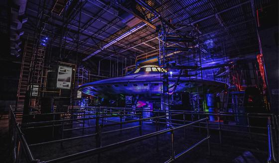
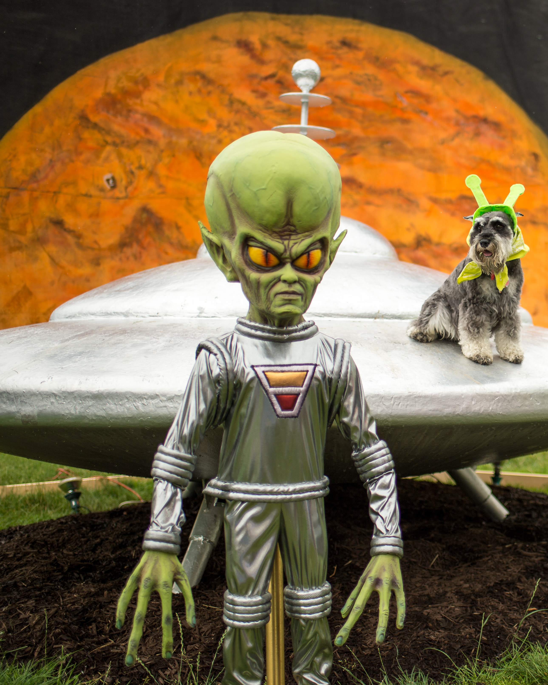
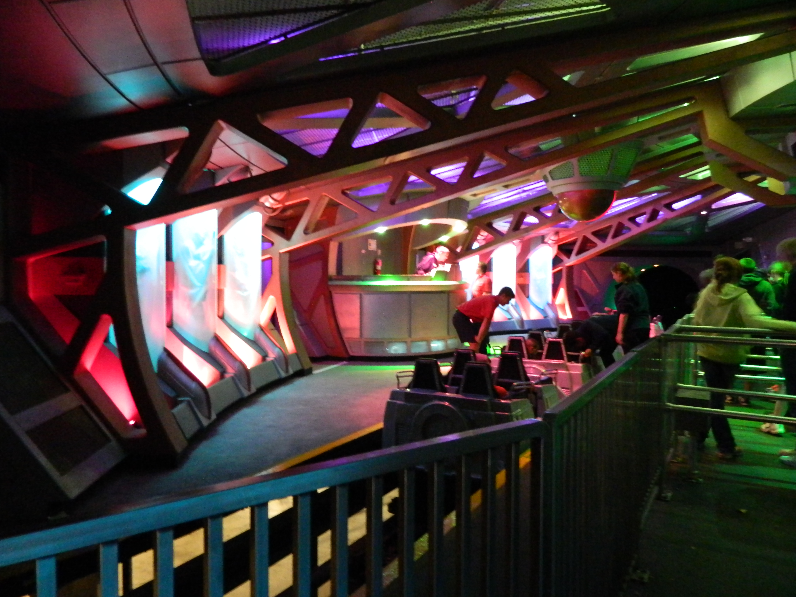
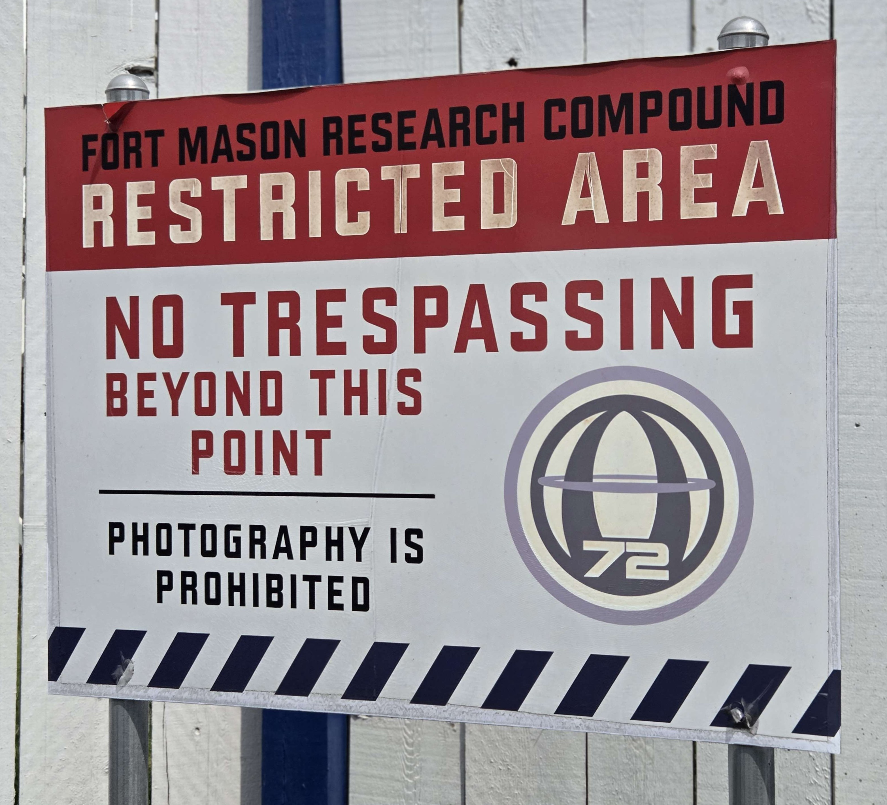

Download a PDF version of this blog article here!
Flight of Fear is a fun and technologically advanced dark ride (at least for its time) made by Premier Rides. Located at Kings Island in Ohio and Kings Dominion in Virginia, it has provided thrills and scares to twice as many audiences compared to most other coasters. But what makes Flight of Fear so frightening - what makes it a flight of fear? In order to answer that question, we explore how Flight of Fear is a special piece of science fiction that utilizes the medium of being a roller coaster to quell fears about space and foster interest in the topic amongst its riders.
The Ride Proper
Flight of Fear is a dark coaster themed around aliens and the otherworldly. Guests enter the Hangar 18 Fort Cooper military base where the fictional Bureau of Paranormal Activity conducts their research. As they step into the main queue room, they discover a giant flying saucer sitting in the middle of the room. Guests then snake their way through the queue, entering the saucer, before finally reaching the loading area. They are then loaded into the trains and launched to 54 mph in the span of 4 seconds into the dark and twisted “spaghetti bowl”. After the ride, riders exit the train in an area separate from the station so the trains can return empty, making it seem like the riders were “abducted.” This narrative of guests being “captured” comes from Anthony Esparza, Senior Vice President for Paramount Parks Design and Entertainment and the one responsible for the storyboards and overall theming of Flight of Fear. In 25 Years of Fear: Celebrating Flight of Fear at Kings Island, Esparza explains that “Jim Seay of Premier Rides came to us with a little secret project… He had a ride concept where he wanted to do the first magnetically launched coaster. After seeing the length of the track launch, I thought it would be super fun to just be abducted by a UFO.” As guests are whisked at breakneck speed into the dark, they quickly see splotches of light pass by them and hear the ride’s eerie score, unable to pinpoint where the sound is coming from. The mix of the darkness, speed, turns, and sound all come together to discombobulate riders and make them feel like they were suddenly just captured and whisked away in a UFO. This, as well as the empty cars returning to the station, elevate the extraterrestrial theme and heighten fear in the awaiting guests.

Photo Source
Why Sci-Fi?
Being abducted by aliens sounds like something right out of a science fiction show, which was exactly the point. Flight of Fear was originally themed around the 1995 TV show revival of The Outer Limits. The Outer Limits was an anthology sci-fi series, dramatizing a specific scientific concept and its effect on humanity in each episode, with some examples being biochemical warfare, the discovery of practical cold fusion power, and eugenics and human mutation. Since the show covered many different “what if?” questions commonplace in science fiction, both rides are “loosely based on several episodes of The Outer Limits, [being] heavily themed to an alien invasion, with riders entering the fictional Federal Bureau of Paranormal Activity and eventually boarding an alien ship”, since they’re virtually the same ride. In 2001, Paramount Parks lost the license for The Outer Limits, so all direct references and branding to the show were stripped from both versions of the ride, though the core of the ride was left intact.
This begs the question: what enthralls us to science fiction? What is so attractive and gripping about the genre? Detractors might say that it’s just escapism, a desire to ignore the issues of the real world and hide away in an exciting one. While that may be the reason for some, it’s not the full picture. Zachariah Berkson, Assistant Professor at ASU, states that the direct goals of science fiction stories are “to caution against the horrors of endless war (e.g., The Forever War), or to glorify human ingenuity (e.g., The Martian), or to explore the ramifications of a radically different political system (e.g., The Dispossessed, 1984)” in his article What Is The Purpose of Science Fiction Stories?. Beyond these direct goals, people can also extrapolate their own lessons and takeaways from science fiction, with some effects being:
1. Inviting people to consider how their everyday choices and interactions in the present shape the future. By taking place in a foreign setting, sci-fi writers can comment on and display pressing issues in real life without the stigma that accompanies them. Chuck Adler, in his TED Talk Why Science Fiction and Fantasy is Important for your Life, discusses the Star Trek episode Let That Be Your Last Battlefield and its racial allegory, concluding his recap of the episode with “Fictionalizing prejudice and injustice in this way makes them easier to talk about in some sense… it’s easier to talk about it because it is alien.” After viewers of Let That Be Your Last Battlefield see how the episode ends, they can ask themselves “do I want to suffer the same fate?” and adjust their behavior accordingly based on that answer. That change could be something small, like developing empathy towards people who are different from them, or even something major, like becoming an activist for the issue. Either way, the viewer thinks about how their everyday choices today affect tomorrow based on science fiction.
2. Inspiring readers to pursue careers in science and technology. After indulging in a fantastical world that exists due to human ingenuity, determination, and innovation, one may find themselves wanting to join the ranks of those pushing the envelope of what humans are capable of achieving. Zachariah Berkson claims that science fiction “informed my decision to pursue a career in science and engineering, to very purposefully work toward the futures that I think are best and brightest.” Zach’s story is not uncommon, and research even suggests that exposure to science fiction early on in life can influence someone to pursue science as a career. One of the conclusions in the paper Past futures and technoscientific innovation: The mutual shaping of science fiction and science fact is “While this project is still underway and it is too early to draw final conclusions, it does appear that, while scientists and engineers reject the notion that science fiction has a completely deterministic impact on their career choices and research trajectories, there definitely appears to be some kind of relationship between an inclination toward the practice of science and the appeal of science fiction.” Science fiction may not be the sole factor in determining if someone becomes a scientist, but it can open the door to the realm of possibilities in the field.
3. Answering questions about what the future could look like. While technological innovations present in sci-fi stories aren’t 1-for-1 predictions, they can influence what technologies may exist in the future. One example of this is some of the developers of Google Earth crediting Neal Stephenson’s 1992 novel Snow Crash as an inspiration for the technology (though it's been debated that other science fiction stories were inspirations too). Regardless, different authors have different views on what the future will be like, and by immortalizing their ideas into a story and sharing it with others, these serve as answers to the big question of “what does the future look like?”. In his article The Psychological Benefits Of Science Fiction, Adam Eason shares his view on sci-fi; how it “tugs at a primal itch in us which is curious to understand the unknown and imagine the impossible.” Humans are logical creatures, and don’t like leaving questions unanswered. Science fiction is our “patchwork” attempt to answer questions that require intelligence and technology that we have not reached yet to fully answer.
(Fear of) The Unknown
I’ve stated that humans are logical creatures and don’t like leaving questions unanswered, but why? Why can’t we as a species just let some questions linger? One reason I believe why is due to the fear of the unknown. Humans are controlling creatures, and not knowing something means you can’t control it, which then often leads to fearing it. You can’t react to something you don’t know of, you can’t predict the behavior of something you don’t know of, and you don’t know how safe you are when faced with something you don’t know of. H.P. Lovecraft is credited with saying “The oldest and strongest emotion of mankind is fear, and the oldest and strongest kind of fear is fear of the unknown” and more specifically to science fiction, Steve Skojec describes his fascination with sci-fi with “I think that the larger reason why science fiction has endured for me as a lifelong passion is that it embodies the one thing that makes stories utterly compelling: the thrill, and often the fear, of the unknown. Not knowing what’s out there, how dangerous it is, how inevitable it is, is an utterly terrifying concept that is uniquely exciting” in his blog article SciFi & The Thrill of the Unknown in Storytelling. For some, that fear is thrilling, but for others, that fear is crippling, so we create answers for the unknown that lull us into a sense of safety and control, even if those answers are completely inaccurate.
I mean, think about an alien. What features come to mind? Is it green? Is it gray? Does it have a big head? Is it short yet humanoid? Does it look like this?

Photo Source
This is a symbol that we, as humans, have a general and shared understanding of what it represents. However, this is a symbol that’s purely human creation - we don’t truly know what an alien really looks like, or even if they exist at all! The question of “do aliens exist?” is so exciting yet dreadful for people because we don’t have a definitive answer, so we’ve created this symbol to allow us to explore ideas of what aliens could look and act like in order to tame our fear of the unknown by pretending to better understand them (and possibly control over them) in the event that we ever meet them (even though aliens could look and act in ways that humans could never imagine).
How Flight of Fear uses fear
So how does Flight of Fear tie into this? Well, Flight of Fear is a special piece of science fiction, since it not only utilizes common ideas in the genre, but manipulates riders both physically and mentally to think in certain ways that books and movies can’t do. The ride is called Flight of Fear, so right out of the gate, the ride is building up fear in potential riders walking by. For those who dare enter, they step inside a dark research facility, with the warning lines and red alarm lights on the wall hinting towards riders that they shouldn’t be here. Riders then take a left turn and stumble upon the giant saucer in the middle of the room, really honing in on the vibe that they’re seeing something that they shouldn’t. As they wait in line, the lights overhead and on the saucer flicker violently from blue to green to red as the preshow warns guests of the danger they are about to face. They step into the saucer, and the saucer is lit with a foreboding blue tint. After a short walk, riders then arrive at the loading dock, with “people jars” on the other side of the room facing them. Esparza explains that these were included so that people thought “What’s going on, where am I? What's happening to me?” (also from 25 Years of Fear). Riders also see empty trains returning to the station, further adding to the anxiety of what will happen to them. Once riders board the trains, they are quickly accelerated from 0 to 54 mph into the darkness, starting the ride disoriented and keeping that momentum until the ride finally ends. Being a dark ride, riders’ senses are jumbled and they are unable to brace themselves since they can’t see what’s ahead. Dark rides also feel faster than they usually are since they are specifically designed to feel that way. Ugo, Executive Ride Development Engineer at Walt Disney Imagineering, explains in the video Why do roller coasters feel faster in the dark? | Imagineer That! that designers use elements like “helixes and quick turns that don’t actually change the speed, but do change the acceleration to make you feel like you’re going faster, even when you’re not.” This sense of heightened speed in the dark where you already feel disoriented all combine to make you feel a loss of control and fear while riding Flight of Fear.

Photo Source
However, Flight of Fear then flips that fear on its head. Since Flight of Fear is a coaster, when people “survive” the alien encounter and depart from the ride, they feel this sense of accomplishment and satisfaction. From the TedEd video Why is being scared so fun? “The fear feels real, so when we make it through alive, the satisfaction and sense of accomplishment also feel real.” Even though we know that the theming is fictional and that there are no actual aliens, our bodies were telling us otherwise, and we feel this sense of triumph from surviving. From this sense of triumph and satisfaction, we think “that wasn’t so bad” and “I want to do that again”, which the TedEd video also explains with “If your memory of watching a horror film with your friends is positive, and left you with a sense of satisfaction, then you’ll want to do it over and over again.” And if Flight of Fear’s line is too long, there’s luckily another coaster in the area with a similar theme: Orion. Orion’s story is framed as using humans to test their space transport vehicles as they travel through a meteor storm to a new planet within the Orion constellation. Both rides are connected through the fictional Fort Mason Research Compound, which is what makes up Area 72. The area is adorned with signs and symbols that are synonymous with a top secret, high security government research facility. These signs and symbols leave an impression of science fiction on guests as they leave the park, and the positive experiences they felt from the rides are then associated with the themes of the rides themselves. Guests who leave feeling this positive curiosity and interest in the extraterrestrial go home and explore that curiosity, possibly leading them from an interest in science fiction to science proper.

So Why Kings Island?
The short answer to this question is money, but the long answer’s a bit more nuanced than that. When Paramount Parks first bought Kings Island and its sister park in 1992, the original pitch for their new indoor attraction was going to be themed around Star Trek: Deep Space Nine. However, due to the show not meeting Paramount's standards, the focus was shifted to a different intellectual property. Paramount Parks had the license for The Outer Limits, and so that was the direction the idea went in. Once the theme was set, the goal of making both Flight of Fears the world’s first launched roller coasters to feature linear induction motor technology became the driving force to finishing them. After Flight of Fear opened at Kings Island in 1996, it was situated in a small section of the Coney Mall area. After Firehawk was added to the park in 2007, that small subsection became X-Base, themed to space and the abnormal. However, Firehawk itself was inherited from Six Flags Worlds of Adventure, and as such, was repainted and placed in X-Base, with very little extraterrestrial theming to itself. Once Firehawk was removed in 2017 and Orion was added in 2020, X-Base received an overhaul to become the current Area 72, which is where the extraterrestrial theming strengthened, now having 2 coasters that greatly contributed to the area’s overall alien theme. Kings Island built Flight of Fear to be a technological marvel, but the alien theming and significance was isolated compared to the rest of Coney Mall. Firehawk laid the foundation for the sci-fi themed land, and Orion revealed the full potential of Area 72 to plant the seed for the pursuit of science in Kings Island’s guests for the foreseeable future.